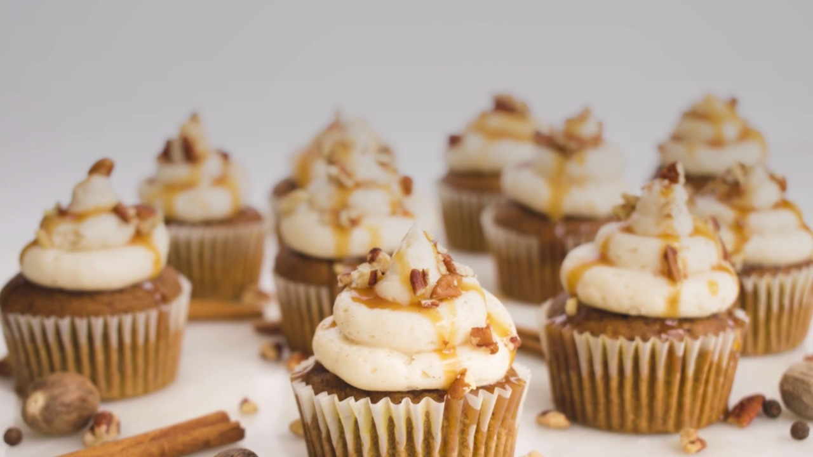
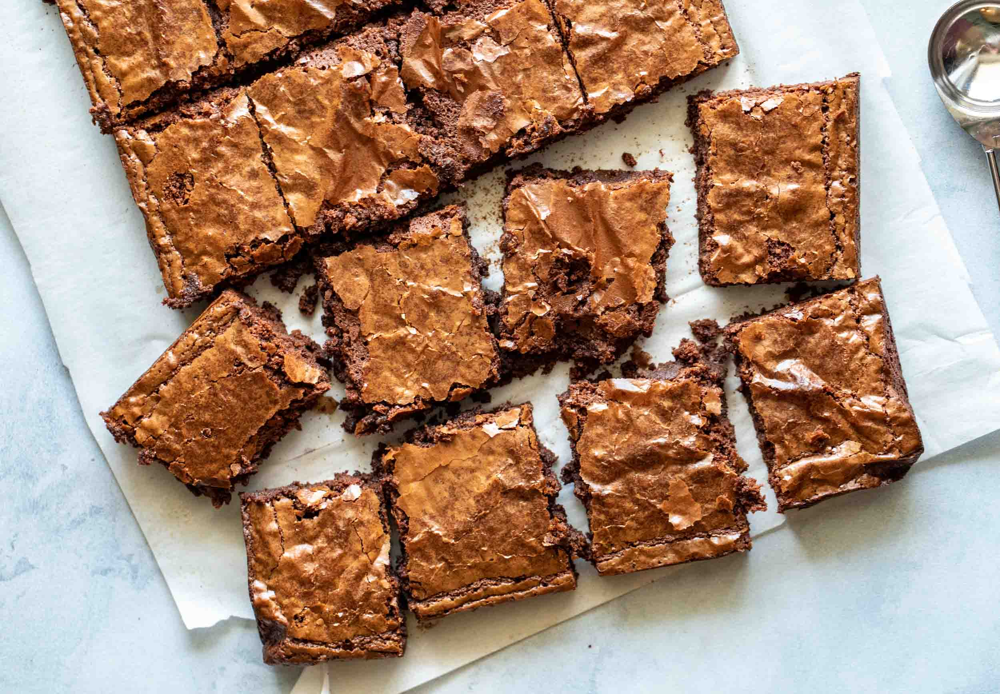
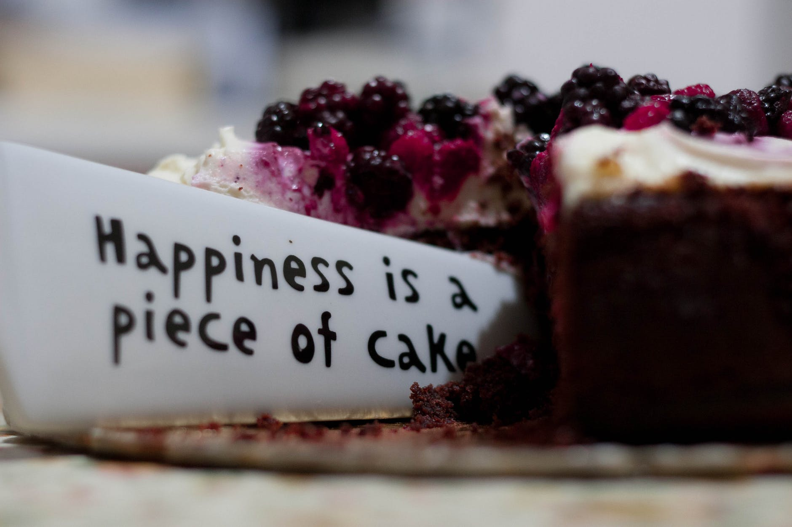
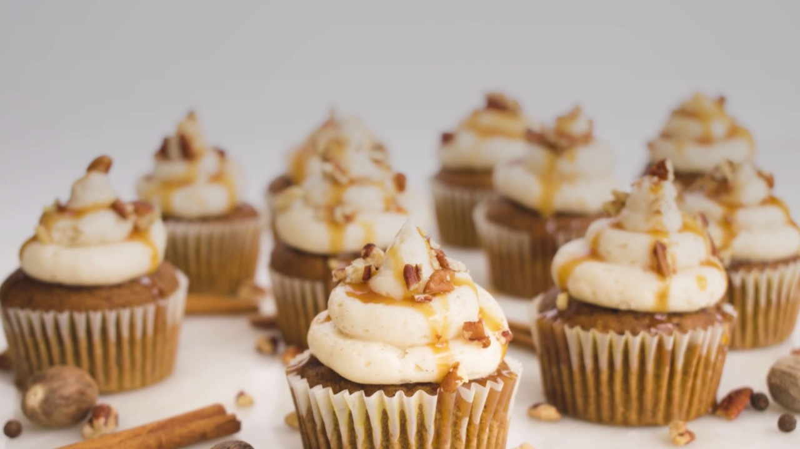
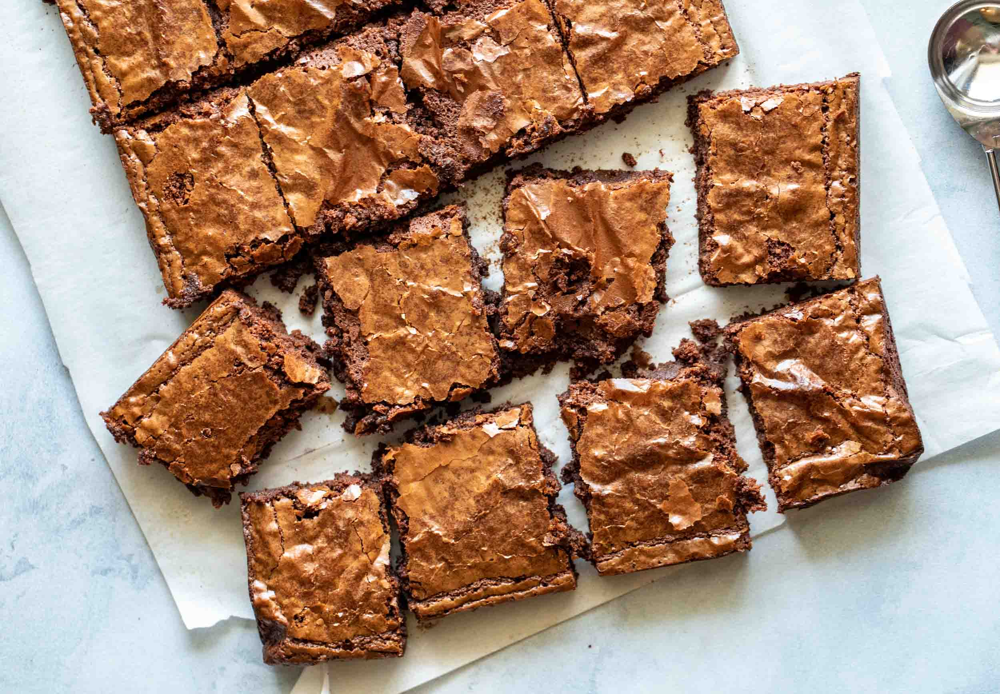
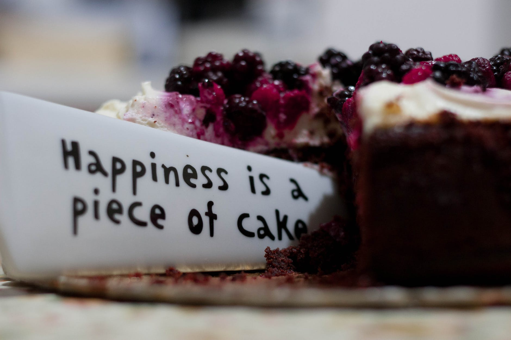

Made With Love
"Life is short, eat dessert first"- Jacques Torres
 





Here you’ll find: baking recipes, photographs of amazing desserts and kitchen moments with friends and family. I enjoy the end result of a kitchen filled with sweet treats, I find there is so much more to it than just sugar and butter, some flour and eggs. This website is full of yummy recipes that are guaranteed to bring people together. From ice cream to cookies this website will help teach you to make all things sweet! I hope you enjoy making these recipies!
Recipie of the week!
These cupcakes are so delicious. It is an easy recipe to follow. Bake them with love!
Need some help? Watch this video for step by step directions!
Ingredients:
- 1 1/2 cup flour
- 1 3/4 teaspoon baking powder
- 1 cup of sugar
- 1/2 cup oil
- 1/2 teaspoon vanilla extract
- 2 eggs
- 1/2 cup milk
- 1 tablespoon yogurt
Instructions:
Preheat oven at 350F or 180C
In a separate bowl combine flour and baking powder
In a big bowl add in 2 eggs. Beat it with a hand mixer or whisk until fluffy 4. Then beat in sugar and oil until creamy. Then add in yogurt (optional)
To make sure everything is well-combined use a spatula or a big spoon to scape of the flour on edge and combine with the batter.
Of your choice chose a cupcake pan. Then put it cupcake liners if u don't have them just make sure to grease the bottom. Then pour the batter in.
Put it in the oven and bake it at 350F or 180C for 20 min or until brown on top 8. Make sure to cool it for 10 - 15 min before taking out of the pan